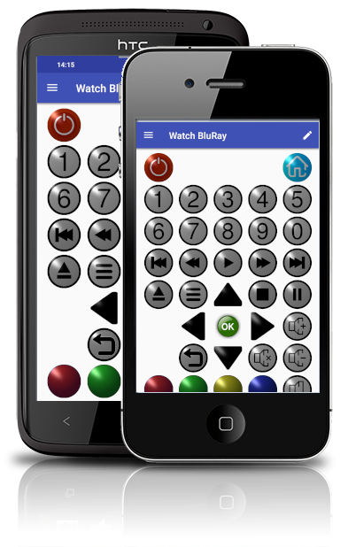

The first time you run the AndyMOTE app you need to configure the server IP address in the App Settings.
Next, AndyMOTE needs to know about the Devices you want to control (ie, the remotes you added to LIRC when you setup the AndyMOTE Server).
Once you have added your devices, you need to create the activities you wish to wish to use.
Finally, customise things the way you wish; change key positions, change icons, add custom keys etc...
